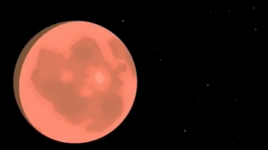
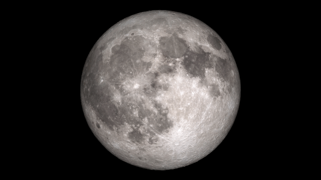
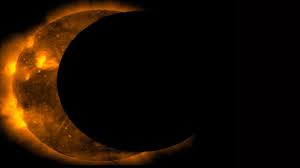
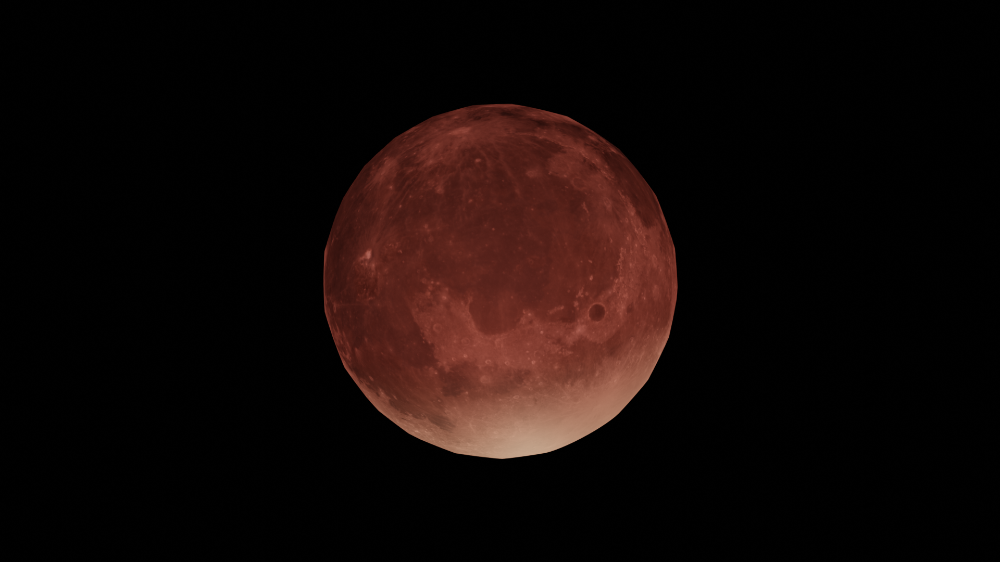
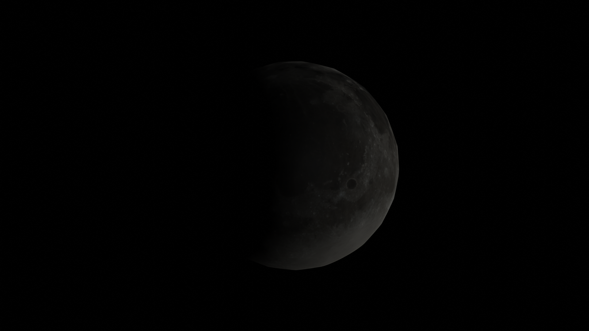
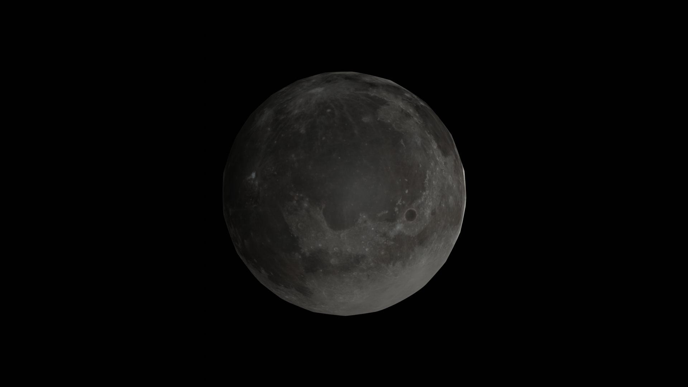
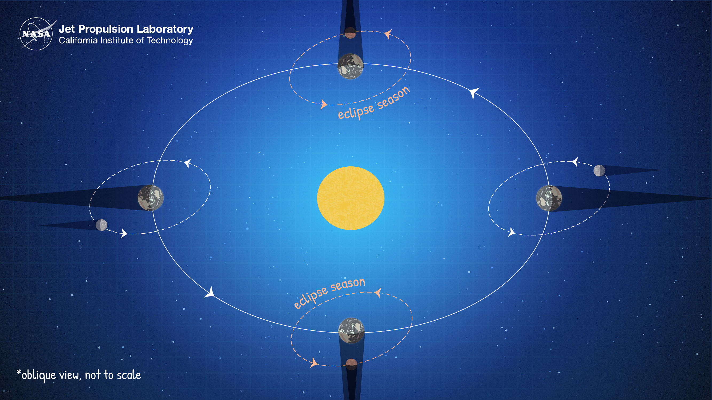
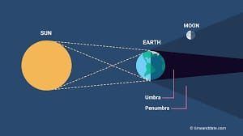

-
What is eclipse? An eclipse is a celestial event where one astronomical object, such as the Sun, Moon, or a planet, moves into the shadow of another, temporarily blocking or obscuring its light. -
The Alignment Sunny the Sun, Luna the Moon, and Eddie the Earth. They are friends who live in the vast cosmos.This alignment is crucial for eclipses.
 -
Types of Eclipses - Solar Eclipse
- solar eclipse where Sunny temporarily disappears behind Eddie, casting a shadow on Luna.

-
Lunar Eclipse
In a lunar eclipse, show Luna turning reddish as she passes through Earth's shadow.
 -
Total Solar Eclipse A total solar eclipse happens when the Moon passes between the Sun and Earth, completely blocking the face of the Sun. People located in the center of the Moon’s shadow when it hits Earth will experience a total eclipse.

-
Partial Solar Eclipse A partial solar eclipse happens when the Moon passes between the Sun and Earth but the Sun, Moon, and Earth are not perfectly lined up.
 -
Hybrid Solar Eclipse Because Earth's surface is curved, sometimes an eclipse can shift between annular and total as the Moon’s shadow moves across the globe. This is called a hybrid solar eclipse. -
Total Lunar Eclipse A total lunar eclipse occurs when the Moon and the Sun are on exact opposite sides of Earth.
 -
Partial Lunar Eclipse A partial lunar eclipse happens when part of the Moon enters Earth’s shadow. In a partial eclipse, Earth’s shadow appears very dark on the side of the Moon facing Earth.
 -
Penumbral In a penumbral eclipse the Moon passes through an outer region of the Earth's shadow called the penumbra. This is the outer part of the Earth's shadow, in which the Earth appears to cover part of the Sun's disk, but not all of it
 -
Eclipse Seasons The time period when the Moon, Earth and Sun are lined up and on the same plane – allowing for the Moon to pass through Earth’s shadow – is called an eclipse season. Eclipse seasons last about 34 days and occur just shy of every six months. When a full moon occurs during an eclipse season, the Moon travels through Earth’s shadow, creating a lunar eclipse.
 -
why only some regions on Earth can see them? Some regions on Earth can see eclipses because the Earth has a shadow, consisting of two parts: the penumbral shadow and the umbral shadow. Only areas located within the umbral shadow, where the celestial bodies align perfectly, can witness total eclipses. Regions within the penumbral shadow may experience partial eclipses. The rest of the Earth outside these shadows sees no eclipse.
 -
how long eclipse occur at a time ? The total eclipse lasts for only a maximum of a few minutes at any location, because the Moon's umbra moves eastward at over 1700 km/h. Totality currently can never last more than 7 min 32 s.
-
How do scientists know when and where eclipses will occur? Scientists can predict when and where eclipses will occur with a high degree of accuracy due to our understanding of the motion and orbits of celestial bodies, particularly the Sun, Earth, and Moon. Here's how they do it:- Astronomical Calculations
- Lunar and Solar Cycles
- Eclipse Seasons
- Ephemerides and Almanacs
- Historical Records
- Observations and Technology